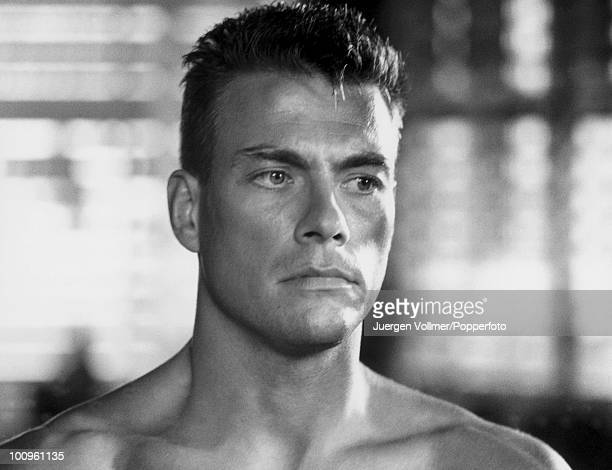
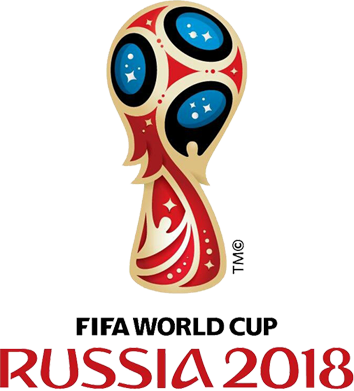

- JCVD ICI
- Patrick Sébastien ICI
- Classement Coupe du Monde 2018 ICI
- Tableau ICI
JCVD

Tu comprends, je sais que, grâce à ma propre vérité en vérité, la vérité, il n'y a pas de vérité et cette officialité peut vraiment retarder ce qui devrait devenir...
Mais ça, c'est uniquement lié au spirit.
Je ne voudrais pas rentrer dans des choses trop dimensionnelles, mais, après il faut s'intégrer tout ça dans les environnements et il faut toute la splendeur
du aware puisque the final conclusion of the spirit is perfection Tu vas te dire : J'aurais jamais cru que le karaté guy pouvait parler comme ça !
Tu vois, je sais que, grâce à ma propre vérité entre penser et dire, il y a un monde de différence et cette officialité peut vraiment retarder ce qui devrait devenir...
Et tu as envie de le dire au monde entier, including yourself.
Retour en haut
Patrick Sébastien
Et encore une bougie de soufflée
Et encore une année de passée
Et encore une bougie de soufflée
Et encore une année de passée-eh-eh-eh
Nous te souhaitons un joyeux anniversaire
Pour que t'aies tout bon pour l'année entière
Beaucoup d'amour et une santé de fer
Un joyeux anniversaire
Nous te souhaitons un joyeux anniversaire
Nos voeux de bonheur profonds et sincères
La réussite et la joie que tu espères
Un joyeux anniversaire
Retour en haut
Résultats coupe du monde 2022

- France
- Croatie
- Belgique
- Angleterre
Lien vers le site de la FIFA :
FIFA
Retour en haut
Tableau
| Nom |
Age |
pays |
| Tartempion |
27 |
 |
| Vanderbruck |
32 |
 |
| Nom |
Age |
Pays |
Retour en haut